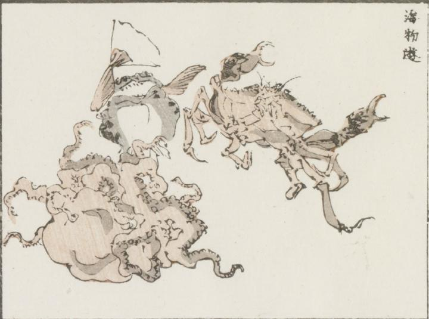

蟹；カニ，蛸；タコ，河豚；フグ

蟹と蛸が相撲のようなものをとっており、蛸はひっくりかえっている。河豚のようなものが、片ひれに扇子を持ち、行司のように両者の間に立っている。
著作者：牧墨僊／出典：親書誌：U426_nichibunken_0097：滑稽洒落狂画苑；コッケイシャレキョウガエン／日付：2007／資源識別子：U426_nichibunken_0097_0010_0000
Copyright (c)2010- International Research Center for Japanese Studies, Kyoto, Japan. All rights reserved.